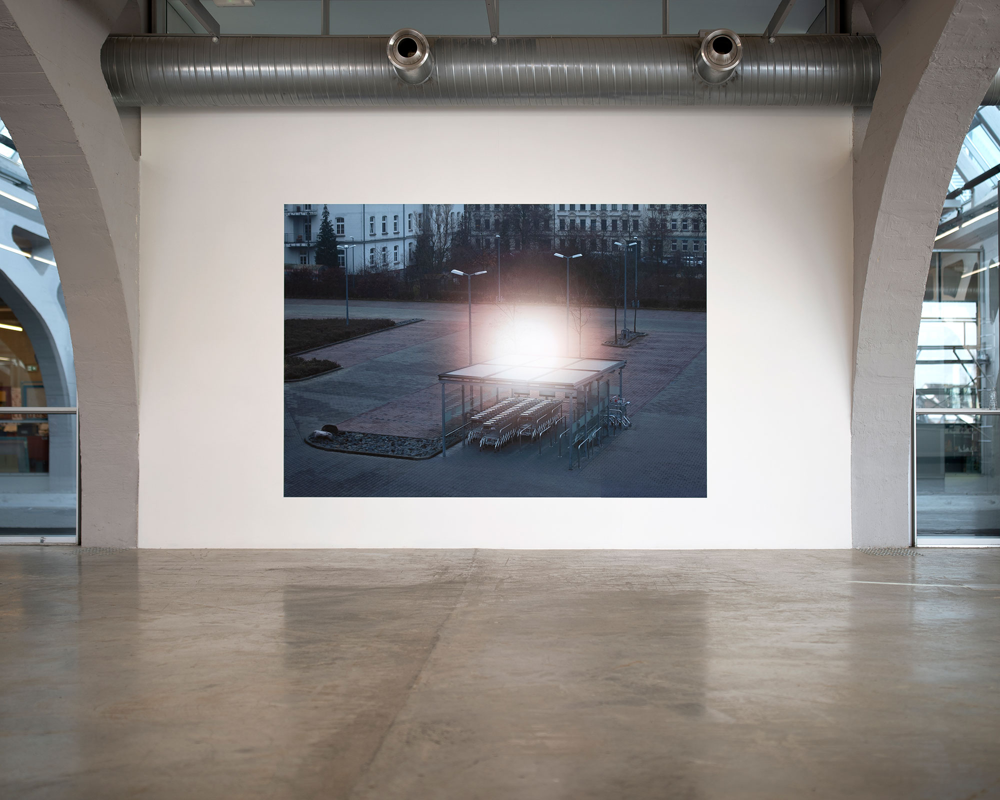
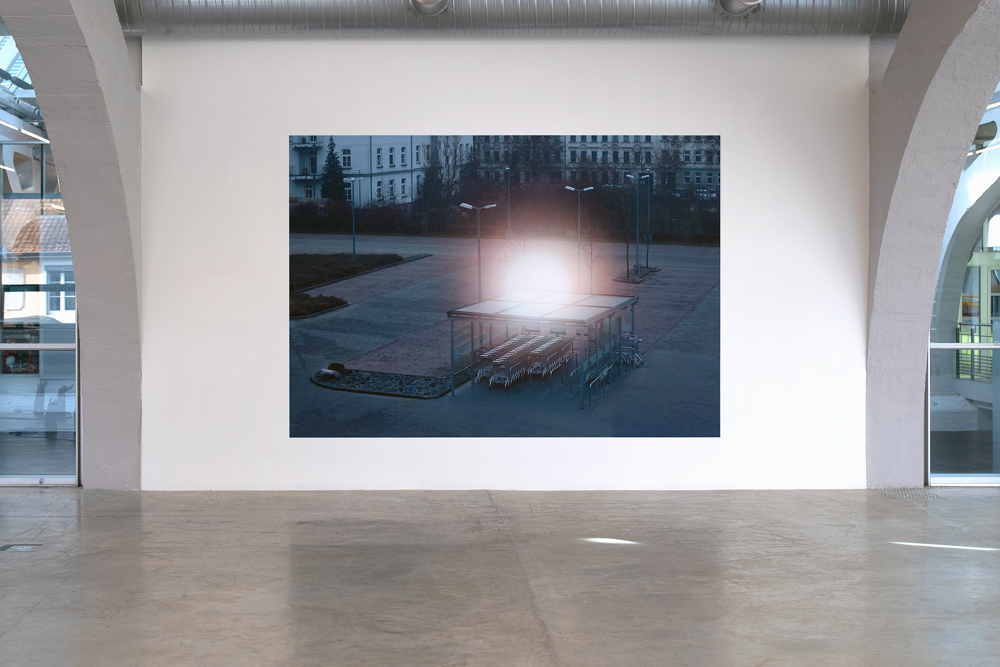
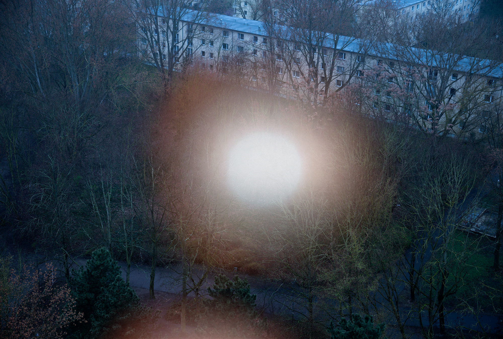

Jessica Arseneau


Stillness, 2020
Inkjet print on adhesive textile, pinspot light
228 x 330 cm
Exhibition view at the exhibition Power up, imaginaires techniques et utopies sociales, 2024, La Kunsthalle Mulhouse
Stillness is part of a series of works that address the artificial erasure of the night and the resulting phenomenon of insomnia. The apparent calm of the image centers entirely on an artificially illuminated point, presenting the urban landscape in a state of wakefulness. There is a false note in the image's harmony. Does it suggest the risk of falling asleep? Or perhaps establish the silence necessary before any form of movement?
Text excerpted from the exhibition brochure of Power up, imaginaires texhniques et utopies sociales.

Unfinished Ending, 2024
Inkjet print on adhesive textile, pinspot light
228 x 330 cm